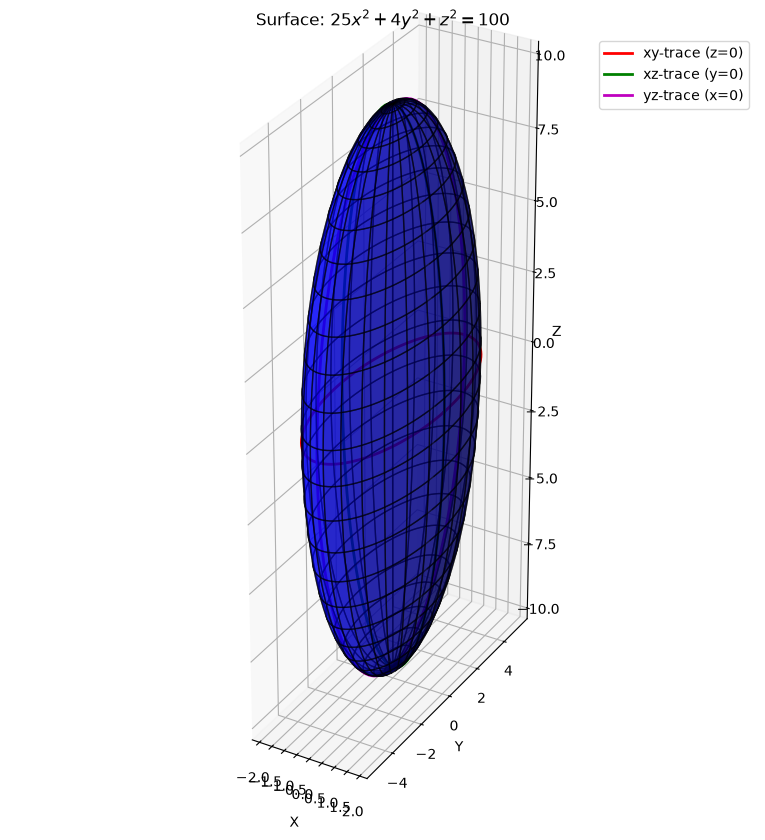
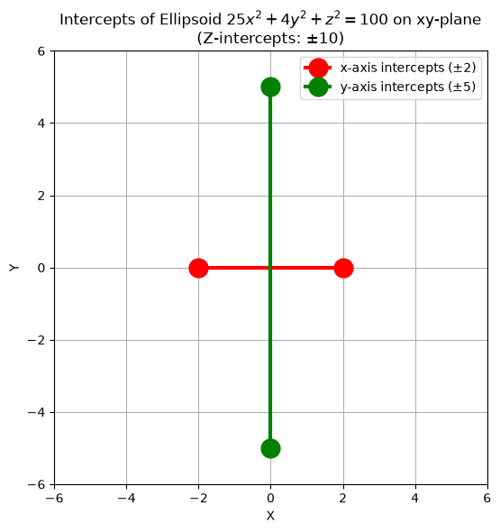
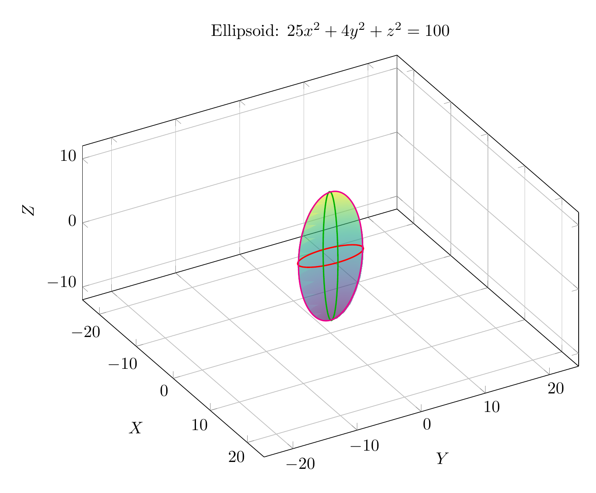
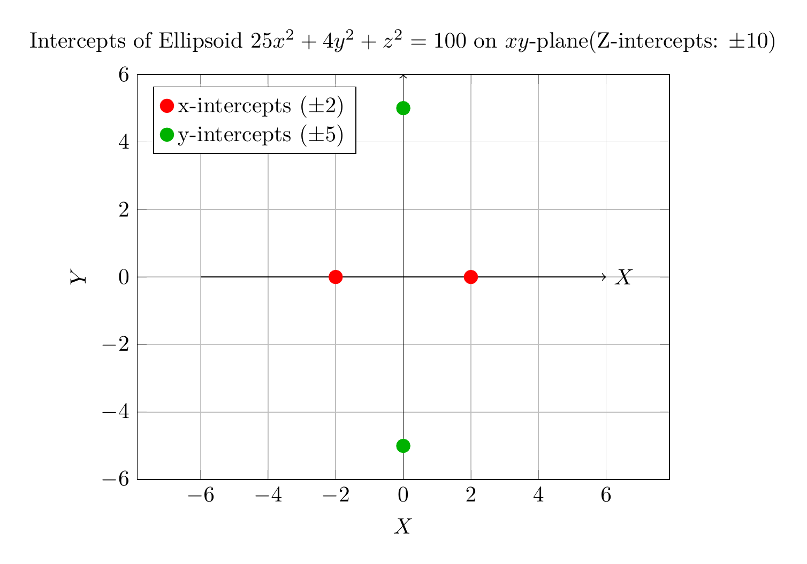

Path: mcma-Qwen3.5-397B-A17B/calculus-12.6.14/chat_20260823_213318_228406_utc_0800
Problem
Please solve the math problem in the image.

End of problem
Answer
# Solution: Identify the Surface Using Traces
The given equation is:
$$25x^2 + 4y^2 + z^2 = 100$$
To identify and sketch the surface, we will examine its traces, which are the curves of intersection of the surface with planes parallel to the coordinate planes.
## 1. Rewrite in Standard Form
First, we divide the entire equation by 100 to get it into a more recognizable form:
$$\frac{25x^2}{100} + \frac{4y^2}{100} + \frac{z^2}{100} = \frac{100}{100}$$
$$\frac{x^2}{4} + \frac{y^2}{25} + \frac{z^2}{100} = 1$$
This can be written as:
$$\frac{x^2}{2^2} + \frac{y^2}{5^2} + \frac{z^2}{10^2} = 1$$
This is the standard equation of an **ellipsoid** centered at the origin $(0, 0, 0)$ with semi-axes of lengths $a=2$ along the x-axis, $b=5$ along the y-axis, and $c=10$ along the z-axis.
## 2. Analyze the Traces
Let's find the traces in the coordinate planes.
### xy-trace (set $z = 0$)
Substitute $z=0$ into the original equation:
$$25x^2 + 4y^2 + 0^2 = 100 \implies 25x^2 + 4y^2 = 100$$
Dividing by 100:
$$\frac{x^2}{4} + \frac{y^2}{25} = 1$$
This is an **ellipse** in the xy-plane with x-intercepts at $(\pm 2, 0)$ and y-intercepts at $(0, \pm 5)$.
### xz-trace (set $y = 0$)
Substitute $y=0$ into the original equation:
$$25x^2 + 4(0)^2 + z^2 = 100 \implies 25x^2 + z^2 = 100$$
Dividing by 100:
$$\frac{x^2}{4} + \frac{z^2}{100} = 1$$
This is an **ellipse** in the xz-plane with x-intercepts at $(\pm 2, 0)$ and z-intercepts at $(0, \pm 10)$.
### yz-trace (set $x = 0$)
Substitute $x=0$ into the original equation:
$$25(0)^2 + 4y^2 + z^2 = 100 \implies 4y^2 + z^2 = 100$$
Dividing by 100:
$$\frac{y^2}{25} + \frac{z^2}{100} = 1$$
This is an **ellipse** in the yz-plane with y-intercepts at $(0, \pm 5)$ and z-intercepts at $(0, \pm 10)$.
## 3. Conclusion
Since all traces in the coordinate planes are ellipses, the surface is an **ellipsoid**. The semi-axes lengths are 2, 5, and 10 along the x, y, and z axes respectively. The plots below visualize the ellipsoid and its traces.
$\boxed{\text{ellipsoid}}$
---




\documentclass[border=10pt]{standalone}
\usepackage{pgfplots}
\pgfplotsset{compat=1.18}
\usepgfplotslibrary{colormaps}
\begin{document}
\begin{tikzpicture}
\begin{axis}[
view={60}{30},
xlabel={$X$},
ylabel={$Y$},
zlabel={$Z$},
title={Ellipsoid: $25x^2 + 4y^2 + z^2 = 100$},
axis equal,
width=12cm,
height=10cm,
grid=major,
colormap/viridis,
]
% Parametric plot of the ellipsoid
% x = 2 cos(u) sin(v)
% y = 5 sin(u) sin(v)
% z = 10 cos(v)
\addplot3[
surf,
shader=interp,
opacity=0.6,
domain=0:360,
y domain=0:180,
samples=30,
samples y=15,
colormap/viridis
]
({2*cos(x)*sin(y)}, {5*sin(x)*sin(y)}, {10*cos(y)});
% xy-trace (z=0): x^2/4 + y^2/25 = 1
% x = 2 cos(t), y = 5 sin(t), z = 0
\addplot3[
domain=0:360,
samples=100,
thick,
color=red
]
({2*cos(x)}, {5*sin(x)}, 0);
% xz-trace (y=0): x^2/4 + z^2/100 = 1
% x = 2 cos(t), y = 0, z = 10 sin(t)
\addplot3[
domain=0:360,
samples=100,
thick,
color=green!70!black
]
({2*cos(x)}, 0, {10*sin(x)});
% yz-trace (x=0): y^2/25 + z^2/100 = 1
% x = 0, y = 5 cos(t), z = 10 sin(t)
\addplot3[
domain=0:360,
samples=100,
thick,
color=magenta
]
(0, {5*cos(x)}, {10*sin(x)});
\end{axis}
\end{tikzpicture}
\end{document}

\documentclass[border=10pt]{standalone}
\usepackage{pgfplots}
\pgfplotsset{compat=1.18}
\begin{document}
\begin{tikzpicture}
\begin{axis}[
xlabel={$X$},
ylabel={$Y$},
title={Intercepts of Ellipsoid $25x^2 + 4y^2 + z^2 = 100$ on $xy$-plane\\(Z-intercepts: $\pm 10$)},
axis equal,
width=10cm,
height=8cm,
grid=major,
xmin=-6, xmax=6,
ymin=-6, ymax=6,
legend pos=north west,
]
% x-intercepts: (2, 0) and (-2, 0)
\addplot[only marks, mark=*, mark size=3pt, color=red] coordinates {(2, 0) (-2, 0)};
\addlegendentry{x-intercepts ($\pm 2$)}
% y-intercepts: (0, 5) and (0, -5)
\addplot[only marks, mark=*, mark size=3pt, color=green!70!black] coordinates {(0, 5) (0, -5)};
\addlegendentry{y-intercepts ($\pm 5$)}
% Draw axes lines for clarity
\draw[->] (axis cs:-6,0) -- (axis cs:6,0) node[right] {$X$};
\draw[->] (axis cs:0,-6) -- (axis cs:0,6) node[above] {$Y$};
\end{axis}
\end{tikzpicture}
\end{document}

End of answer